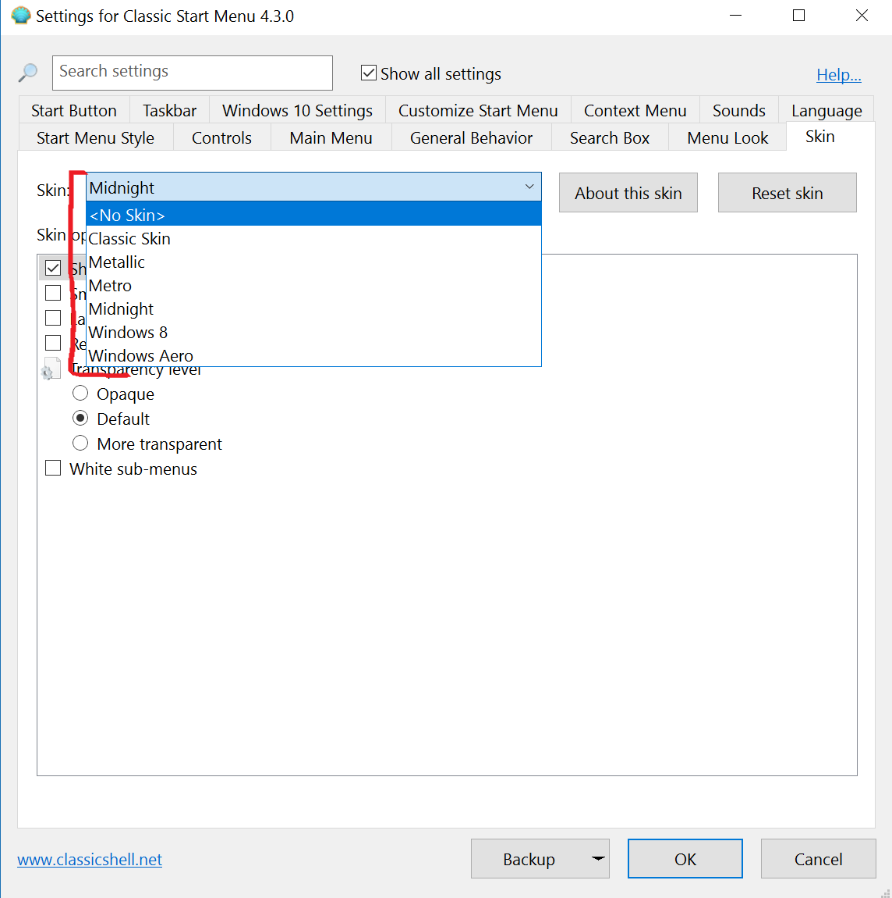

If it absolutely has to be 7 style,
there are other skins that can be downloaded into the skins folder.
There is a Vista version that is somewhat like Smoked Glass.
I'd call it a distant cousin:
viewtopic.php?f=17&t=5655&p=25537#p25537
| Classic Shell http://www.classicshell.net/forum/ |
|
| Smoked Glass skin is missing from my CS 4.30 http://www.classicshell.net/forum/viewtopic.php?f=17&t=7407 |
Page 1 of 1 |
| Author: | Teemo [ Thu Mar 23, 2017 6:34 pm ] |
| Post subject: | Smoked Glass skin is missing from my CS 4.30 |
I just re-installed Win 10 v 1607 build 14393.969 on a desktop computer. I downloaded the latest "ClassicShellSetup_4_3_0.exe" and installed. But in the drop down Skins menu, Smoked Glass is missing. I know I had it in a previous install of Classic Start Menu. how can I get it to show up in the menu? Thanks  |
|
| Author: | Ivo [ Thu Mar 23, 2017 7:41 pm ] |
| Post subject: | Re: Smoked Glass skin is missing from my CS 4.30 |
You are using the Windows 7 style, which doesn't have the Smoked Glass skin. Open the Start Menu Style tab, select the Classic style, then go back to the skins. |
|
| Author: | juniper7 [ Sun Jun 11, 2017 4:27 pm ] |
| Post subject: | Re: Smoked Glass skin is missing from my CS 4.30 |
If it absolutely has to be 7 style, there are other skins that can be downloaded into the skins folder. There is a Vista version that is somewhat like Smoked Glass. I'd call it a distant cousin: viewtopic.php?f=17&t=5655&p=25537#p25537 |
|
| Page 1 of 1 | All times are UTC - 8 hours [ DST ] |
| Powered by phpBB® Forum Software © phpBB Group https://www.phpbb.com/ |
|